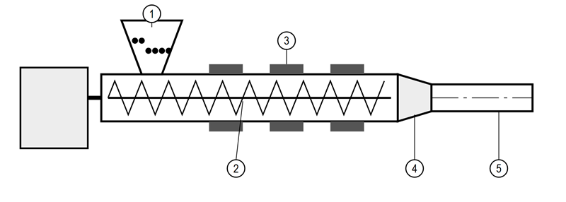
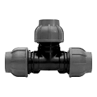

Kunststoffe, PE
Heute lernst du: woraus Kunststoff ist, was er gut und was er schlecht kann, wie ein Kunststoffrohr gemacht wird und wo du PE-, PEX- und PVC-Rohre einbaust.
So arbeitest du: Lies zuerst den grauen Infokasten. Mach dann die Aufgaben darunter. Die Antworten findest du im Infokasten. Fertig? Tippe bei jeder Aufgabe auf „Prüfen“. Bessere deine Fehler aus.
Die Kästen mit Strichellinie und ★★★ („Mehr wissen“ und „Vertiefung“) sind erweiterte Aufgabenstellungen.
Infokasten A: Woraus ist Kunststoff? (Synthese)
|
Kunststoff wird aus Erdöl, Erdgas und Kohle gemacht. Dabei wird der Rohstoff chemisch umgewandelt. Das nennt man Synthese. Bei der Synthese werden viele kleine Teilchen (Moleküle) zu langen Ketten verbunden. Kunststoff gibt es nicht in der Natur. Er ist künstlich gemacht. Darum kann man ihn genau so herstellen, wie man ihn braucht. Alle Kunststoffe enthalten Kohlenstoff. Darum sind fast alle Kunststoffe brennbar. Merke: Kunststoff wird aus Erdöl, Erdgas und Kohle gemacht und ist fast immer brennbar. |
Aufgabe 1 ★ leicht – Woraus ist Kunststoff?
Lies Infokasten A. Woraus macht man Kunststoff? Kreuze die 3 richtigen Rohstoffe an.
| Erdöl | Sand | Erdgas | Eisenerz | Kohle | Holz |
Richtig oder falsch? Kreuze an.
| Satz | richtig | falsch |
|---|---|---|
| Kunststoff enthält Kohlenstoff. | ||
| Bei der Synthese werden Moleküle zu langen Ketten verbunden. | ||
| Kunststoff findet man in der Natur, zum Beispiel im Wald. |
Infokasten B: Was kann Kunststoff gut, was schlecht? (Eigenschaften)
Sonne: Lagerst du Kunststoffrohre lange in der Sonne, wird der Kunststoff spröde (er bricht leicht). Man sagt: Der Kunststoff altert. Kälte: Bei großer Kälte werden Kunststoffrohre auch spröde. Verlege Kunststoffrohre nie, wenn es kälter als −10 °C ist. Merke: Kunststoff ist leicht und rostet nicht. Er verträgt aber wenig Wärme, keine Sonne und keine große Kälte. |
Aufgabe 2 ★ leicht – Vorteil oder Nachteil?
Lies Infokasten B. Ist die Eigenschaft ein Vorteil oder ein Nachteil? Kreuze an.
| Eigenschaft | Vorteil | Nachteil |
|---|---|---|
| rostet nicht | ||
| brennbar | ||
| leicht | ||
| verträgt kein Sonnenlicht | ||
| leitet keinen Strom | ||
| dehnt sich bei Wärme stark aus | ||
| glatte Oberfläche innen | ||
| nicht so fest wie Metall |
Aufgabe 3 ★★ mittel – Was ist auf der Baustelle passiert?
Lies Infokasten B. Welche Eigenschaft passt zum Fall? Schreib den Buchstaben dazu.
A = rostet nicht B = verträgt kein Sonnenlicht C = leicht D = verträgt wenig Wärme E = spröde bei großer Kälte F = brennbar
| Fall auf der Baustelle | Buchstabe |
|---|---|
| Die Rohre lagen den ganzen Sommer vor dem Haus. Jetzt bekommen sie Risse. | |
| Ein Lehrling trägt drei Rohrrollen allein zum Auto. | |
| Ein Rohr liegt seit 30 Jahren im nassen Boden. Es ist noch wie neu. | |
| Ein Rohr hinter dem Holzofen hat sich verbogen. | |
| Im Jänner bei −15 °C bricht beim Verlegen ein Rohr. | |
| Bei einem Brand im Keller fangen die Rohre Feuer. |
Aufgabe 4 ★ leicht – Erkläre es mit einem Satz
Dein Chef sagt: „Leg die Kunststoffrohre in die Halle, nicht in die Sonne!“
Warum? Lies Infokasten B. Kreuze die richtige Antwort an.
| In der Sonne rostet der Kunststoff. | |
| In der Sonne wird der Kunststoff spröde (er altert). Dann bekommt das Rohr Risse und bricht leicht. | |
| In der Sonne wird der Kunststoff schwerer. |
Infokasten C: Was macht man in den Kunststoff hinein? (Additive)
|
In den Kunststoff mischt man Zusatzstoffe. Sie heißen Additive. Damit passt man den Kunststoff an seine Aufgabe an.
Achtung Gesundheit: Manche Weichmacher sind schädlich für die Umwelt und die Gesundheit. Darum darfst du für Trinkwasser nur Rohre und Teile verwenden, die dafür geprüft und zugelassen sind. Merke: Mit Additiven passt man den Kunststoff an seine Aufgabe an. |
Aufgabe 5 ★ leicht – Additive zuordnen
Lies Infokasten C. Verbinde: Schreib den richtigen Buchstaben in die Tabelle.
A = Weichmacher B = Stabilisatoren C = Metallschicht
| Was soll der Kunststoff können? | Buchstabe |
|---|---|
| Der Griff vom Wasserhahn soll glänzen wie Chrom. | |
| Der Schlauch soll weich und biegsam sein. | |
| Das Rohr soll viele Jahre halten, auch bei Wärme. |
Ein Kunde will für seine Trinkwasserleitung einen billigen Gartenschlauch aus dem Baumarkt nehmen. Was sagst du? Kreuze an.
| Das passt. Kunststoff ist Kunststoff. |
| Für Trinkwasser nur geprüfte und zugelassene Rohre und Teile. |
Infokasten D: Wie wird ein Kunststoffrohr gemacht? (Extrudieren)
|
Kunststoffrohre macht man mit einer Extrudiermaschine (Extruder). Das nennt man Extrudieren. So geht es: 1. Der Kunststoff kommt als Granulat (kleine Körnchen) in den Trichter. 2. Die Heizbänder machen den Kunststoff warm und weich. 3. Die Schnecke dreht sich und schiebt den weichen Kunststoff nach vorne. 4. Die Düse gibt dem Rohr die Form und den Durchmesser. 5. Das Rohr wird gekühlt, damit es hart wird. Dann wird es abgeschnitten oder aufgerollt. Merke: Beim Extrudieren wird Granulat erhitzt und durch eine Düse zum Rohr gepresst. |
Aufgabe 6 ★★ mittel – Der Extruder
a) Lies Infokasten D. Welcher Name gehört zu den Nummern 1 bis 5? Tipp den Buchstaben ein.
Diese Wörter gibt es: A Düse – B Heizbänder – C Rohr – D Schnecke – E Trichter mit Granulat

| 1 | 2 | 3 | 4 | 5 |
|---|---|---|---|---|
c) In welcher Reihenfolge passiert es? Tipp 1 bis 5 in die Kästchen.
| Nr. | Schritt |
|---|---|
| Die Schnecke schiebt den weichen Kunststoff nach vorne. | |
| Das Granulat kommt in den Trichter. | |
| Das Rohr wird gekühlt und wird hart. | |
| Die Heizbänder machen den Kunststoff weich. | |
| Die Düse gibt dem Rohr die Form. |
Infokasten E: Welche Kunststoffe gibt es? (Kunststoffgruppen)
|
Es gibt drei Gruppen von Kunststoffen. Man erkennt sie daran, was bei Wärme und bei Kraft passiert.
Bilder aus dem Skriptum PEX ist vernetzt (Infokasten G). Es wird bei Wärme nicht mehr weich wie ein Thermoplast. Merke: Thermoplaste werden bei Wärme weich. Nur sie kann man schweißen. |
Aufgabe 7 ★★ mittel – Die Kunststoffgruppen
a) Lies Infokasten E. Was gehört in die leeren Felder? Tipp den Buchstaben ein.
A bleibt gummiartig – B hart, bricht – C gibt nach, geht zurück – D PE-Rohr – E WC-Sitz – F wird flüssig wie Wasser
Achtung: 1 Antwort bleibt übrig.
| Thermoplaste | Duroplaste | Elastomere | |
|---|---|---|---|
| bei Wärme | wird weich | wird nicht weich | |
| bei Kraft | zäh, biegsam | ||
| Beispiel | Dichtung |
b) Zu welcher Gruppe gehört das Teil? Tipp T (Thermoplast), D (Duroplast) oder E (Elastomer).
| Gummidichtung im Wasserhahn | |
| Lichtschalter, der bei Hitze nicht weich wird | |
| Kunststoffrohr, das man verschweißen kann |
Infokasten F: Das PE-Rohr (Polyethylen)
|
PE ist die Abkürzung für Polyethylen. PE ist ein Thermoplast.
 links: PE-Rohr (Bild aus dem Skriptum), rechts: Klemmfitting für PE (T-Stück, eigenes Foto) Eigenschaften: • Chemikalien aus dem Boden machen ihm nichts. Innen ist es sehr glatt, darum gibt es keine Ablagerungen. • leicht, biegsam (flexibel), leicht zu verschweißen • nicht so fest und hart wie andere Kunststoffe • höchste Dauertemperatur: ca. 60 bis 80 °C Nicht in der Heizung! Sauerstoff kann durch die Rohrwand von PE durchwandern (Diffusion). Der Sauerstoff kommt ins Heizungswasser. Dann rosten Teile aus Metall in der Heizung, zum Beispiel Heizkörper oder Kessel. Verbindungen: Steckverbindung, Schneidringverbindung, Klemmfitting, Schweißen Einsatz: Trinkwasser in der Erde (Hausanschluss, Ortswasserleitung), Abwasserleitungen Gut zu wissen: PE-Rohre für Trinkwasser sind oft schwarz mit blauen Streifen, für Gas gelb oder schwarz mit gelben Streifen. Merke: PE ist das Rohr für Trinkwasser in der Erde. In die Heizung darf es nicht. |
Aufgabe 8 ★ leicht – Richtig oder falsch?
Lies Infokasten F. Kreuze an.
| Satz | richtig | falsch |
|---|---|---|
| PE ist die Abkürzung für Polyethylen. | ||
| PE-Rohre kann man verschweißen. | ||
| PE-Rohre vertragen 120 °C. | ||
| Die Hausanschlussleitung in der Erde ist oft aus PE. | ||
| In PE-Rohren gibt es viele Ablagerungen, weil sie innen rau sind. |
Aufgabe 9 ★★ mittel – Warum nicht in die Heizung?
Ein Kollege will die Heizung mit PE-Rohr bauen. Du sagst: „Das geht nicht.“
Lies Infokasten F. Kreuze an.
a) Beim PE-Rohr kommt …
| Wasser durch die Rohrwand nach außen. | |
| Sauerstoff durch die Rohrwand ins Heizungswasser. | |
| Kalk aus dem Heizungswasser in die Rohrwand. |
b) Dann rosten …
| die PE-Rohre selbst. | |
| die Wasserleitungen im ganzen Haus. | |
| die Teile aus Metall in der Heizung (Heizkörper, Kessel). |
Infokasten G: Das PEX-Rohr (vernetztes PE)
|
PEX (auch PE-X) ist PE, das man nachträglich vernetzt. Dabei mischt man bei der Herstellung einen Stoff dazu. Die Molekül-Ketten verbinden sich fest miteinander. Der Kunststoff wird härter. Eigenschaften: PEX kann man nicht schmelzen. Darum verträgt es hohe Temperaturen: lange Zeit bis 120 °C. Verbindungen: Schraubverbindung, Pressverbindung, Steckverbindung (nicht schweißen, weil es nicht schmilzt) Einsatz: Heizung: Vorlauf, Rücklauf, Fußbodenheizung Für die Heizung braucht PEX eine Sauerstoffsperre (eine Schicht im Rohr, die keinen Sauerstoff durchlässt). Merke: PEX schmilzt nicht. Darum verträgt es Wärme und kommt in die Heizung. |
Infokasten H: Das PVC-Rohr (Polyvinylchlorid)
|
PVC ist ein sehr harter und spröder Kunststoff. Mit Zusatzstoffen kann man ihn weich machen. Höchste Temperatur: 60 °C Einsatz: Abwasserleitungen, vor allem in der Erde (Kanalrohr), dazu Kabelschutzrohre. Nicht für Warmwasser und Heizung, weil es zu wenig Wärme verträgt. Verbindungen: Kleben oder Steckmuffe mit Dichtring Merke: PVC ist hart und spröde und verträgt höchstens 60 °C. |
Aufgabe 10 ★★ mittel – PE, PEX und PVC im Vergleich
Lies Infokasten F, G und H. Was gehört in die leeren Felder? Tipp den Buchstaben ein.
A 120 °C – B 200 °C – C schrauben, pressen, stecken – D kleben, stecken – E Trinkwasser in der Erde – F Heizung, Fußbodenheizung – G Abwasser in der Erde
Achtung: 1 Antwort bleibt übrig.
| PE | PEX | PVC | |
|---|---|---|---|
| höchste Temperatur | 60 bis 80 °C | 60 °C | |
| Verbindung | schweißen, stecken, klemmen | ||
| Einsatz |
Aufgabe 11 ★★ mittel – Fehler finden
Ein Kollege hat die Rohre für ein Haus ausgesucht. Nicht alles passt.
Passt das Rohr? Kreuze an. Passt es nicht, tipp den Buchstaben vom besseren Rohr ein. Passt es, lass das Feld leer.
A PE-Rohr – B PEX-Rohr – C PVC-Rohr
| Plan vom Kollegen | passt | passt nicht | besser ist |
|---|---|---|---|
| Fußbodenheizung aus PE-Rohr | |||
| Hausanschluss in der Erde aus PE-Rohr | |||
| Heizungsvorlauf mit 70 °C aus PVC-Rohr | |||
| Heizkörper-Anschluss aus PEX-Rohr |
Aufgabe 12 ★★★ schwer – Der Kunde will alles aus Kunststoff
|
Ein Kunde sagt: „Kunststoff rostet nicht. Ich will im ganzen Haus nur Kunststoffrohre.“ a) Was nimmst du für diese Leitung? Kreuze an.
b) Im Heizraum soll eine Warmwasserleitung aus PE verlegt werden. Sie ist 12 m lang. Beim Verlegen hat sie 15 °C, im Betrieb 55 °C. PE dehnt sich pro Meter Rohr und pro 1 K um 0,2 mm aus. Tipp nur die Zahlen ein.
Passt PE hier? Kreuze an.
|
Aufgabe 13 ★★ mittel – Fachbegriffe
Fachbegriffe sind die Wörter, die man auf der Baustelle verwendet.
Welcher Fachbegriff passt zur Erklärung? Tipp den Buchstaben in das Feld.
Diese Fachbegriffe gibt es: A Additive – B Diffusion – C Duroplast – D Elastomer – E Extrudieren – F Gefälle – G Granulat – H Legierung – I spröde – J Synthese – K Thermoplast – L vernetzt
Achtung: 2 Fachbegriffe bleiben übrig. Tipp: Lies die Infokästen A bis H.
| Erklärung | Buchstabe |
|---|---|
| Rohstoff wird chemisch umgewandelt: Moleküle werden zu langen Ketten. | |
| Zusatzstoffe, die man in den Kunststoff mischt. | |
| Der Werkstoff bricht leicht. | |
| Kleine Kunststoff-Körnchen, die in den Extruder kommen. | |
| Rohr herstellen: Granulat erhitzen und durch eine Düse pressen. | |
| Kunststoff, der bei Wärme weich wird. Man kann ihn schweißen. | |
| Kunststoff, der bei Wärme nicht weich wird. Er ist hart und bricht. | |
| Kunststoff, der nachgibt und wieder zurückgeht, wie Gummi. | |
| Die Molekül-Ketten sind fest miteinander verbunden (PEX). Es schmilzt nicht. | |
| Sauerstoff wandert durch die Rohrwand. |
Aufgabe 14 ★★★ schwer – Fachbegriffe auf Englisch
Wie heißt der Fachbegriff auf Englisch? Tipp den Buchstaben vom englischen Wort in das Feld.
Diese Wörter gibt es: A brittle – B copper – C flammable – D heat – E heating – F natural gas – G pellets – H pipe – I plastic – J seal – K steel – L sunlight
Achtung: 2 Wörter bleiben übrig.
| Deutsch | Englisch | Deutsch | Englisch |
|---|---|---|---|
| Kunststoff | Sonnenlicht | ||
| Rohr | Dichtung | ||
| Wärme | Heizung | ||
| brennbar | Erdgas | ||
| spröde | Granulat |
Fertig? Tippe bei jeder Aufgabe auf „Prüfen“. Bessere deine Fehler aus.